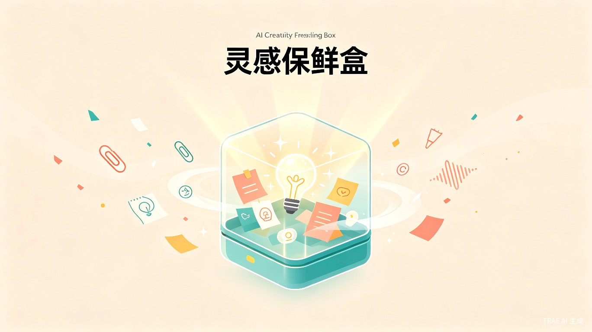
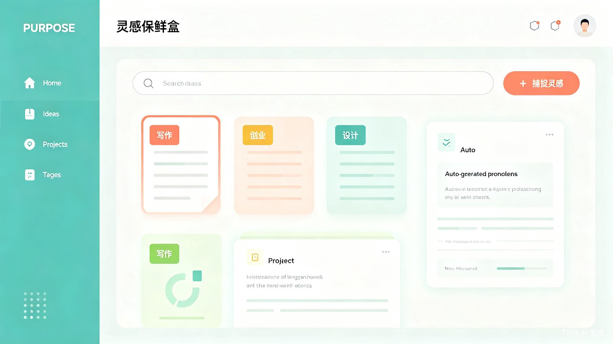

创意工作者每天都在经历这些困境
灵感来得快、去得也快，来不及记录就消失在脑海。事后回想，往往只剩模糊的影子。
笔记软件里塞满了零散记录，却缺乏有效组织。找起来困难，用起来的更少。
一个想法到可执行的项目计划之间，隔着大量的梳理、拆解和排期工作，让人望而却步。
为创意驱动型工作者量身打造
博主、写手、视频创作者，需要持续产出选题和脚本
Side Project 爱好者，想法多但时间碎片化
视觉、交互设计师，需要收集和迭代创意概念
早期创业者和产品经理，快速验证想法并推进落地
四步完成从灵感到项目的蜕变
语音、文字、图片一键记录，
随时随地保存灵感
AI 自动提取核心意图，
打标签、分类、去重
发现想法之间的关联，
自动聚合成主题
一键生成项目计划，
任务拆解、时间线、里程碑
AI 驱动的全链路创意管理
支持语音转文字、随手拍照、快捷输入。无论是在地铁上、咖啡馆还是睡前，都能毫秒级记录想法。
基于大模型的意图识别，自动为每条灵感提取关键词、情感倾向和潜在价值，无需手动整理。
自动分析历史灵感，发现跨时间、跨主题的联系。一个旧想法，可能是新项目的关键拼图。
选中一组相关灵感，AI 自动生成包含任务拆解、时间估算、依赖关系和里程碑的完整项目计划。
将生成的项目同步到看板，实时追踪执行进度。新灵感可随时插入并自动调整计划。
本地优先存储，端侧 AI 处理。敏感创意数据不上云，确保你的每一个想法都安全可控。
清爽直观的交互体验

让创意不再流失，让执行更加高效
多模态快速捕捉 + 自动整理，大幅降低灵感流失
从想法到可执行计划，从数天缩短至数分钟
历史灵感持续产生新连接，创意资产不断增值
灵感保鲜盒，为每一个创意工作者打造的 AI 创意管家。参赛版本持续迭代中，敬请期待。
关注项目进展